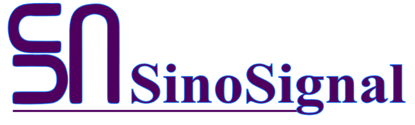

Synology Topology Designer
Design Synology NAS solution topology diagrams. Drag and drop NAS models and DSM software packages to create professional solution proposals for your customers.
Loading... 
Please ensure JavaScript is enabled.